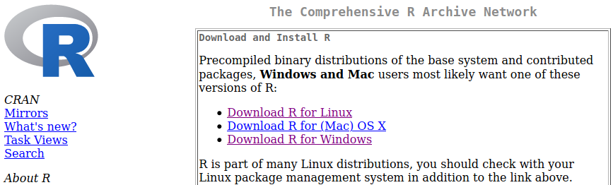

This workshop is aimed towards biologists, and other life sciences researchers with none or limited experience with R programming or even programming in general.
Preparation
Tools
Install R statistical software
If you have an old version of R and you do not use it, uninstall it and then install a newer version. If you prefer to keep your old R version, then you can still install a newer version for this workshop. This is easy on Windows, but can be tricky on Linux.
Go to r-project.org and choose the link appropriate for your operating system.

Installation details
Windows: Click Download R for Windows > base > Download R X.X.X for Windows. This should download an .exe file. It is recommended that you DO NOT install to C:\Program Files\R\. Instead, install to C:\R\. It is also recommended that you install Rtools for building R packages from source code. Click Download R for Windows > Rtools.
Mac: Click Download R for (Mac) OS X > R-X.X.X.pkg that will download R to your computer. If you are not sure what version of Mac OS you are running, click the apple on the top left of your screen and select About this mac (Om den här datorn). In case you are running something older than 10.9, you should instead pick the “R-X.X.X-snowleopard.pkg” to install. Note that this will not give you the latest version of R, but it will be sufficient for most sections of the course. You can then double-click the downloaded package that will prompt you with some questions for installation details. Stick with the default settings and you should be fine.
Linux: Click Download R for Linux then pick your distribution of Linux. On most distributions, this will be via a software install system like yum or apt-get. If you run this make sure that you update your information to the installer first, otherwise you might end up installing at outdated version of R. For some systems you might need to install not only r-base, but also r-devel or you will lack important features of your R installation. When installing R packages, you might need to install OS specific packages before. These are displayed during R package installation.
Install RStudio. Choose based on your OS.

RStudio provides you with tools like code editor with highlighting, project management, version control, package building, debugger, profiler and more. Start up RStudio to check that everything has been installed correctly. If not, contact us and we can help you out.
Install R packages
Extra R packages used in the workshop exercises (if any) are listed below. It is recommended that you install this in advance. Simply copy and paste the code into R.
# install from cran
install.packages(c('tidyverse','lubridate','nycflights13','vcd','patchwork'))Install Docker
It is NOT absolutely necessary to have Docker installed, but we are working on shipping the working course as a Docker container ready to run. In order to be able to use this functionality, please make sure you have Docker Desktop installed and running on your machine.
Install git
In order to use RStudio’s version control features, install Git on your machine. This step is also NOT necessary, but to our experience learning and using git makes your life much easier.
Install Zoom
Go to Zoom website and follow installation instructions. Most likely, your University has already paid some pro plan and you should consult your local IT to get university account details.
Syllabus
The syllabus for this workshop are as follows.
- General introduction to programming and R.
- R environment and RStudio IDE.
- Data types.
- Variables and operators.
- Input/Output.
- Control structures.
- Functions and variable scope.
- Base and ggplot2 graphics.
- Overview of R package anatomy.
- Brief introduction to Tidyverse.
- Brief introduction to RMarkdown.
Learning outcomes
- Feeling comfortable while working with R in RStudio.
- Being able to read some data and perform basic data manipulation in R.
- Being able to perform some basic analysis and generate plots in R.
- Being able to generate a simple report.